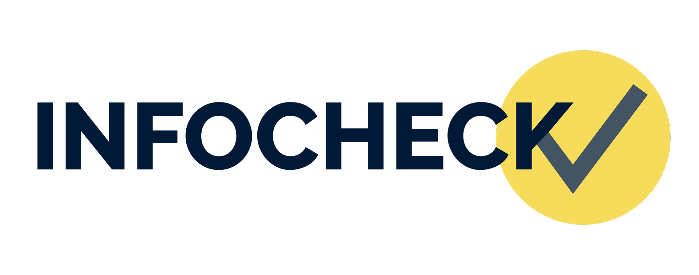
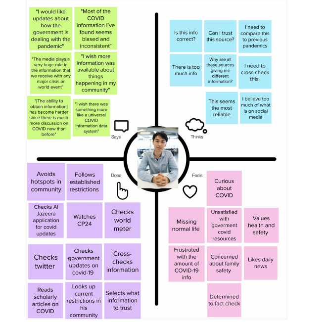
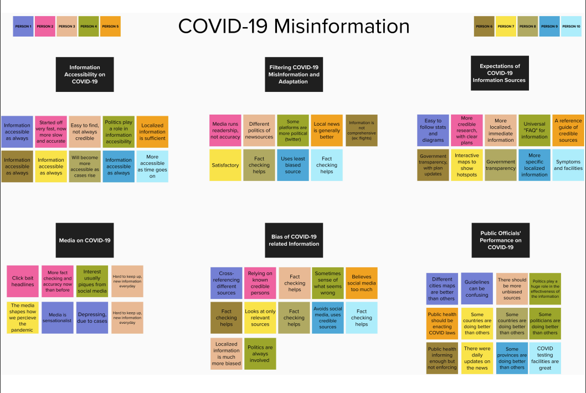
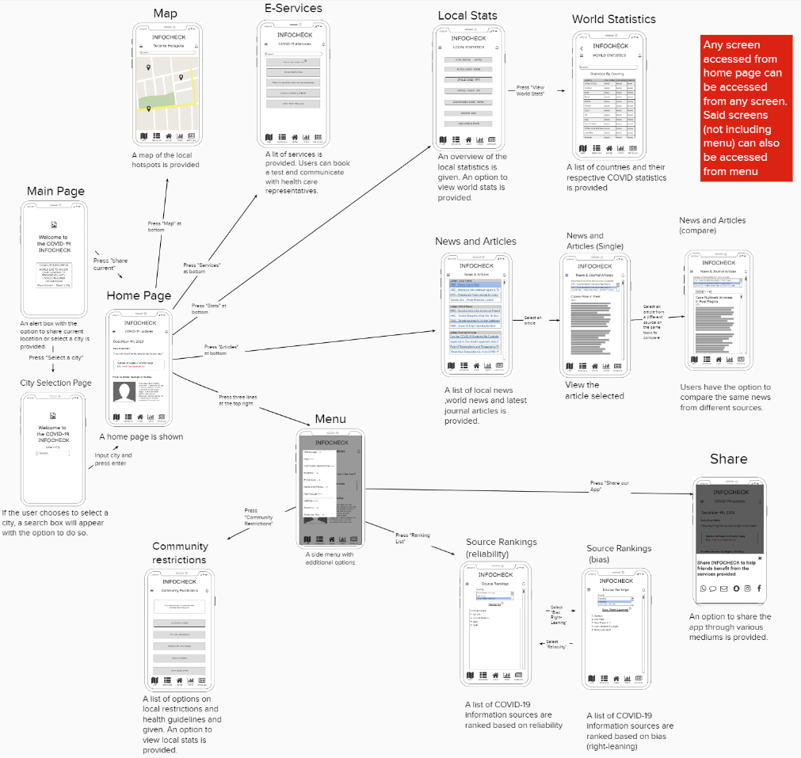
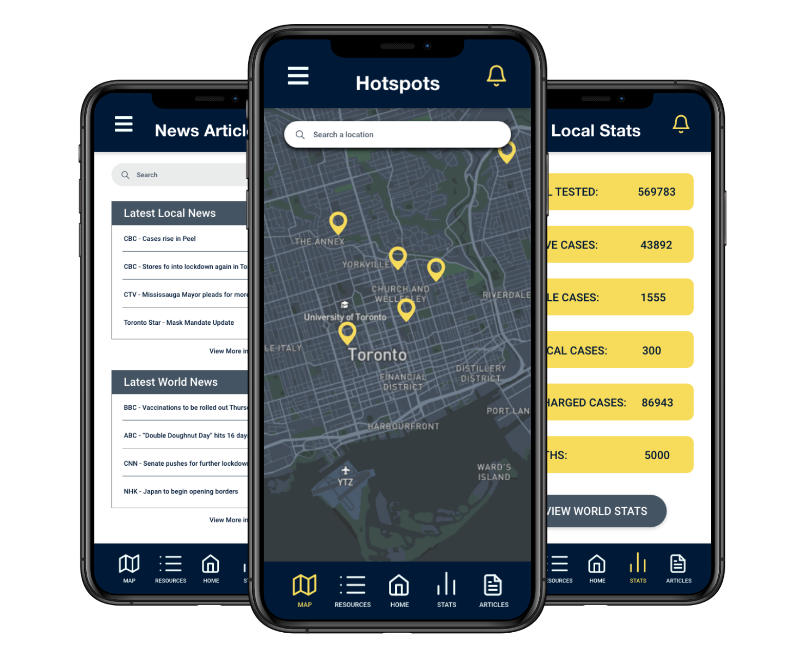

Case Study: InfoCheck, The COVID-19 Information Application
InfoCheck is an application created with the problem of COVID-19 misinformation in mind. The
project was created in INF352, Fall 2020 semester. All the group members have contributed to the
application over the internet due to the social distancing restrictions of COVID-19. The goal of
this project was to tackle the problem of COVID-19 related misinformation

Courtesy of Elysia Te
Contributors
Presentation (December 2020)
Clients & Sectors
The intended clients for the InfoCheck App are users like our persona, Benjamin Chen. We have
identifed the following needs statements for Benjamin.
- Benjamin Chen needs a way to find out COVID-19 guidelines so that he can be
safe
- Benjamin Chen needs a way to easily get resources so that he can make an
informed decision
- Benjamin Chen needs a way to compare sources so that he knows which sources
are reliable and best to follow
- Benjamin Chen needs a way to know where the latest hotspots are so that he can
avoid them and be safe
- Benjamin Chen needs a way to learn about his community so that he can follow
proper guidelines

Empathy Map of Benjamin Chen, made in MURAL
The primary sector that we wish to market to is the everyday urban smartphone user. These users
are living amongst others in a pandemic. Their urban environment is overrun with news, social
media, and information regarding COVID-19. These users need a source of credible information
regarding restrictions, guidelines, sources on COVID-19 in their immediate area.
My Role
The COVID-19 idea my first initial proposal to the group members. Personally, I felt that
the COVID-19 pandemic has been a part of everyone’s lives (my peers, their peers, and I)
that it warrants us to dive deeper. Alan and I conducted the secondary research during the
Discovery phase of our design process. This helped us find intracacies related to our problem
of COVID-19 related misinformation.
During the Ideation phase, I helped group together the following clusters that would
be prioritized by our group. Our group voted on the priorities, which resulted in the
following priorities (in order of feasibility and impact.
-
Functionality
- Resources
- Credibility
- Hotspots
- Personal Assistance

Prioritorization Grid of our Clusters, made in MURAL
During the Interpretation phase, Alan and I continued to write a summary of our findings from the
study we conducted. Additionally, Venkat and I created the affinity diagram using our
interviews. This helped us understand the types of things Benjamin would need to have addressed.

Affinity diagram, made in MURAL
During the Experimentation, I came up with our hypothesis statements for Benjamin Chen. They are
as follows:
- We believe that we will achieve a lower percentage of daily local cases if Benjamin Chen
can achieve avoiding local hotspots using our COVID hot spot map feature.
- We believe that we will achieve more awareness of COVID-19 testing locations if
Benjamin Chen can achieve booking an appointment nearby using our e-services
feature.
-
We believe that we will achieve increased participation in safety practices such as
social
distancing if Benjamin Chen can achieve informing himself on community restrictions
- We believe that we will achieve better exposure to reliable COVID-19 news and updates
if Benjamin Chen can achieve comparing different articles on our app using our COVID19
information ranking/comparing feature.
Additionally, I help create the mid-fidelity prototype of InfoCheck.

Mid-fidelity Prototype. Made in Balsamiq, Layout in MURAL
During the Evolution, I helped write and edit the pitch requirements for the InfoCheck app.
- "With uncertainty on all fronts due to the COVID-19
pandemic, the world is in dire need of
ways to alleviate the challenges and obstacles we have faced in the past year. We live
in a
time
of great uncertainty. The need for reliable COVID-19 related information is of the
utmost
importance to keep ourselves and each other safe. Due to the convoluted nature of
COVID-19
related news, it has become challenging even to answer simple questions such as whether
wearing masks are effective or not. Infocheck aims to help make a difficult time a
little
easier by
helping people answer their COVID-19 related questions and providing people with a means
to
access reliable COVID-19 information. With features such as a COVID-19 case hotspot map,
a
list of COVID-19 services, local and world COVID-19 stats and restrictions, and a way to
compare
COVID-19 news and articles. Infocheck is not only the solution to the pressing issue of
COVID-19
misinformation—it is the solution to better battling the virus and pandemic."
(InfoCheck, 2020)
Platform
The platform intended for InfoCheck are mobile users. This includes iPhone and Android platforms.

Courtesy of Elysia Te
Methodologies
Our methodology for designing InfoCheck was human-centered design (HCD). Every step of the way,
we consulted and evaluated our persona, Benjamin Chen. We created affinity diagrams from our
research (which included user feedback), empathy maps, needs statements, as-is, and eventual
to-be scenarios and put our prototypes to the test with user testing. With user testing, we were
able to come out with our medium-fidelity product. Every step in our journey, from an idea to a
prototype, had some sort of user justified reasoning to help support us.
Tools
With the COVID-19 Pandemic, we were forced to conduct all research, meetings, and work to be
online. As a result, most of our team meetings were met over Facebook Messenger and Zoom. Some
other tools we used helped us organized our work and ideas.
- Google Drive to
help organize group documents and work.
- MURAL to help organize
ideas and notes.
- Balsamiq to create our
medium-fidelity prototype.
- Slides to present
InfoCheck to INF352.
Skills Developed
Some skills developed with working on this project are quite unique, considering the situation. I
have never worked on such a large group project without ever meeting team members before.
Additionally, one of our group members lived in a different time zone, which sometimes caused
conflicts. As a result, I have learned to be more independent as a team member, as not having
someone physcially there to force me do work is important. Another skill I have learned is
working in MURAL. Usually when I work, I do not create notes or brainstorm ideas. The MURAL
portion of the assignments help me realize the importance of putting ideas down and
collaborating with others. Of course, without the pandemic we can do all this without MURAL and
have actual sticky notes and white boards.
Lessons Learned
As a result of having a fully online group project, I have learned to be more proactive in taking
roles when doing work. Originally, I was not motivated enough to contribute since I have never
met anyone face to face in the group. The initial getting to know people over the internet is
much more difficult than in person. For me, I need to be comfortable with people. But after this
assignment, I have learned sometimes situations are not ideal. I had to adapt, and learn that I
need to take more initiative if I want to contribute more to my group.
Assignment Resources
Below are links to download each step of InfoCheck's development